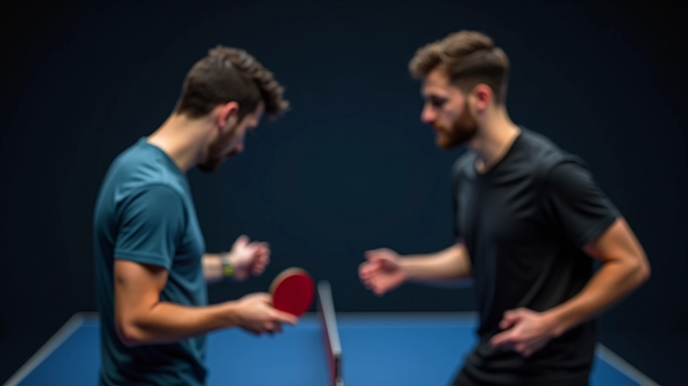
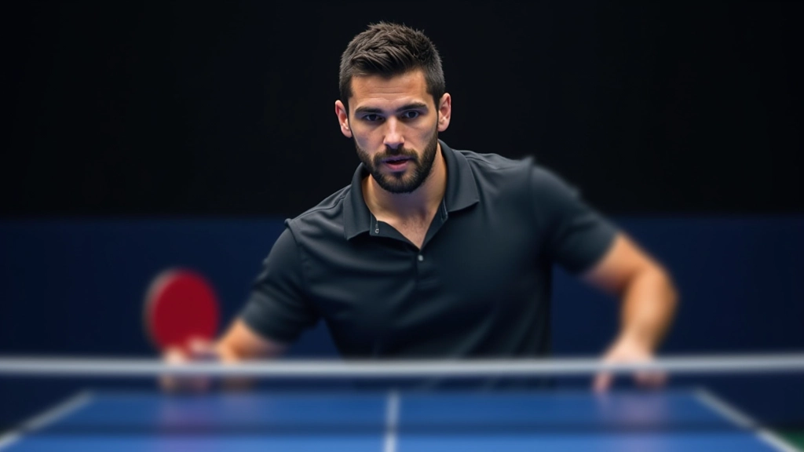
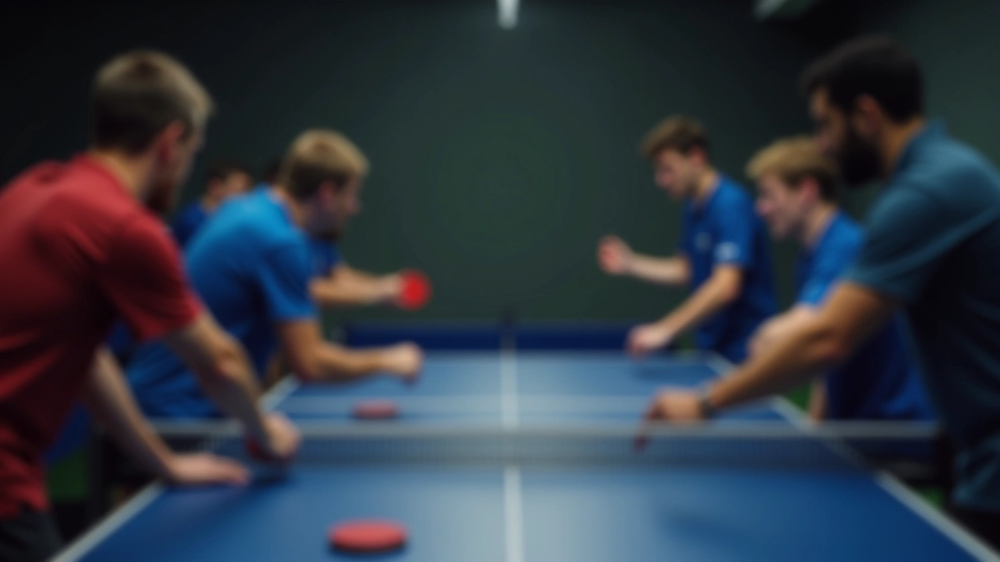

نظام الإشارات والتواصل الفعال
تطوير نظام إشارات واضح بينك وبين زميلك، مع تقنيات التواصل الصامت التي تزيد من فرص الفوز
لماذا التواصل هو أساس الفوز
التنسيق في لعب الزوجي ليس مجرد حركات جسدية — إنه نظام تواصل متكامل. عندما يكون هناك التباس أو تأخر في الفهم بينك وبين زميلك، ستخسران النقاط. لكن عندما تمتلكان نظام إشارات واضح وموثوق، ستلاحظان الفرق فوراً.
نحن نعرف أن معظم اللاعبين يركزون على الحركة والسرعة فقط. لكن الفريق الذي يتواصل بفعالية يسيطر على اللعبة بطريقة مختلفة تماماً. التواصل الصامت — من خلال الإشارات والنظرات والإيماءات — يعطيك ميزة نفسية حقيقية ضد الفريق الآخر.


الأساسيات: أنواع الإشارات الثلاث
هناك ثلاثة أنواع رئيسية من الإشارات التي يجب أن تتقنها أنت وزميلك:
الإشارات البصرية
نظرة عينك، حركة رأسك، إيماءة بسيطة. هذه تحدث قبل الكرة مباشرة — تخبر زميلك "أنا مستعد للهجوم" أو "غطِّ الزاوية اليمنى".
الإشارات الجسدية
موضع قدميك، زاوية كتفيك، طريقة وقوفك. الفريق الآخر يراقب هذه الحركات دون أن يعرفوا أنها إشارات مقصودة.
الإشارات الصوتية البسيطة
كلمة واحدة أو صيحة محددة. مثل "ياليسار" أو "تمام" — إشارات سريعة تقول الكثير دون تفاصيل.
ملاحظة مهمة
هذا الدليل يقدم معلومات تعليمية عن التواصل في لعب الزوجي بتنس الطاولة. كل لاعب لديه أسلوبه الخاص والنتائج تختلف حسب التطبيق والتدريب المنتظم. استشر مدرب متخصص قبل تطبيق تقنيات جديدة في تدريبك.
تقنيات التواصل المتقدمة
بعد إتقان الأساسيات، يمكنك البدء في بناء نظام أكثر تعقيداً. المفتاح هو الثبات والوضوح. إذا اتفقت أنت وزميلك على أن "النظر لليمين" يعني "اضرب الكرة بقوة من الزاوية اليمنى"، فيجب أن تستخدما هذه الإشارة بنفس المعنى في كل مرة.
لا تحاول اختراع نظام معقد جداً. الفريق الآخر قد لا يلاحظ إشارات دقيقة جداً، لكنهم سيلاحظون النتائج. عندما تضربان الكرة في نفس الاتجاه في كل مرة تعطيان إشارة معينة، ستبدأ الخطة في الظهور بوضوح.


كيفية التدريب على الإشارات
لا يكفي أن تتفقا على الإشارات — يجب أن تتمرنا عليها حتى تصبح تلقائية تماماً. خذ 10-15 دقيقة من كل جلسة تدريب لممارسة النظام:
قفا أمام بعضكما وركزا على الإشارات البصرية فقط — لا كرات، لا ضربات. فقط الإشارة والرد.
أضيفا الكرة الآن. أحدكما يعطي إشارة، والآخر يجب أن يتوقع نوع الكرة التي ستأتي بناءً على الإشارة.
العبا نقاط كاملة باستخدام الإشارات. لاحظا كم مرة كانت الإشارة صحيحة وكم مرة حدث التباس.
بعد أسبوع أو أسبوعين من التدريب المنتظم، ستجدان أن الإشارات أصبحت جزءاً طبيعياً من لعبتكما. لن تضطرا حتى للتفكير فيها — ستحدث بشكل حدسي.
التواصل تحت الضغط
عندما تكون النقاط حاسمة والضغط عالي، النظام الذي بنيتاه سيُظهر قيمته الحقيقية. الفريق الآخر قد يبدأ في الخطأ من الأعصاب، لكنكما ستبقيان هادئين وممركزين لأن لديكما نظام واضح.
الفريق الذي يتواصل بفعالية تحت الضغط هو الفريق الذي يفوز في النهاية. ليس بسبب المهارة وحدها، بل لأن الإشارات السريعة والواضحة تقضي على التردد والارتباك.
تذكر: التواصل ليس ترفاً — إنه جزء أساسي من اللعبة. استثمر الوقت في بناء نظام قوي مع زميلك، وستري الفرق فوراً في النتائج.

فريق شمس الطاولة للمحتوى الرياضي
فريق المحتوى والمراجعة
تم إعداده بواسطة فريق شمس الطاولة للمحتوى، المتخصص في أدلة عملية وسهلة المتابعة لتحسين التنسيق في لعب الزوجي.